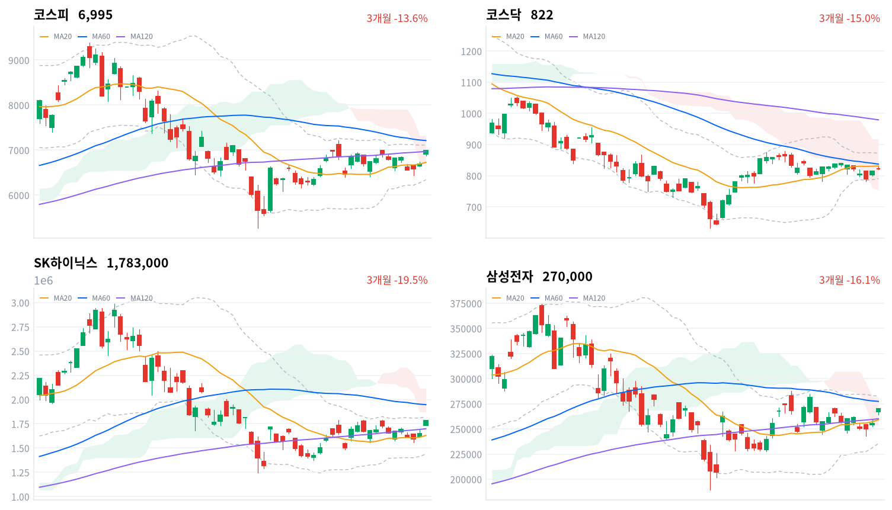
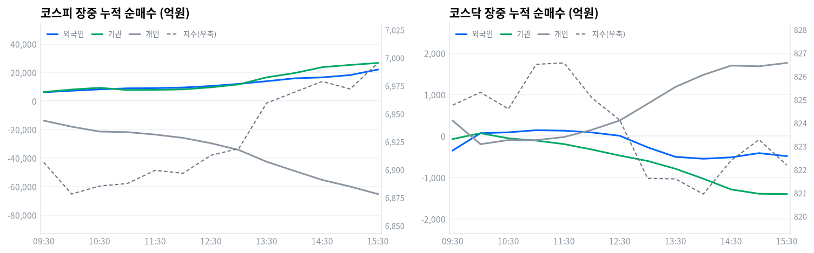

코스피는 오늘 4.61% 올라 6,995로, 코스닥은 1.07% 올라 822로 마감했다. 오픈AI가 새 인공지능 모델을 공개한 뒤 간밤 미국 메모리 반도체가 급등하자 삼성전자·SK하이닉스가 지수를 끌어올렸다.
코스피에서는 외국인이 2조5,532억원, 기관이 2조6,491억원을 순매수했고 개인이 6조8,374억원을 순매도했다(당일 잠정). 60개 업종 중 51개가 올랐고 반도체와반도체장비가 6.63%로 상승률 1위였다.
코스피는 오늘 308포인트 올라 7,000선 코앞에서 마감했다. 오픈AI가 지난 3일 새 인공지능 모델 아스트라를 공개한 뒤 간밤 미국 메모리 반도체가 급등했고, 그 열기가 그대로 삼성전자와 SK하이닉스로 옮겨왔다.
중요한 건 이번 매수가 두 종목에 갇히지 않았다는 점이다. 코스피에서 외국인이 2조5,532억원, 기관이 2조6,491억원을 순매수했다(당일 잠정). 반도체와반도체장비 업종은 171종목 중 120개가 함께 올라 6.63% 상승했다. 전기장비도 35종목 중 28개가 오르며 6.61% 상승해, 인공지능이 부르는 전력 수요까지 같은 방향으로 묶였다.
위험 노출은 다음 세션까지 확대한다. 코스피 프로그램 매매의 방향성 바스켓인 비차익이 1조6,278억원 순매수로 전체 순매수 1조8,566억원의 대부분을 채웠고, 이 방향은 외국인·기관의 잠정 순매수와 어긋나지 않는다. 다만 코스닥은 외국인이 717억원, 기관이 1,292억원을 순매도해 1.07% 오르는 데 그쳤으니 확대는 대형주 쪽으로만 한다.
코스피가 20일 이동평균(6,728)을 다시 내주면 이 판단을 재검토한다. 오늘 종가는 일목 구름 안이고 구름 하단이 6,684이라, 20일 이동평균과 구름 하단이 함께 무너지면 오늘 급등이 하루짜리 반응이었다는 뜻이 된다. 국고채 10년물이 4.385%에서 더 올라 금리 부담이 되살아나는 것도 같은 방향의 위험이다.
전일(9월4일) 미국 증시는 3대 지수가 모두 내렸다. S&P500이 0.38%, 나스닥이 0.29%, 다우가 0.51% 하락했다.
같은 시간대 아시아는 엇갈렸다. 닛케이가 2.12%, 대만가권이 1.67% 올랐고 상해종합은 +0.07% 보합권이었으며 항셍만 -0.93%로 내렸다. 아시아 평균은 0.73%였는데 코스피(4.61%)는 이보다 3.88%포인트 높게 마쳐 역내에서 압도적으로 강했다.
코스피는 전일 종가(6,687)보다 3.34% 높은 6,911에서 출발해 큰 폭의 갭업으로 하루를 시작했다. 한국 정규장 시간대 미국 선물 자료는 이번 수집에 들어오지 않아 따로 다루지 않는다.
코스피는 6,911에서 출발해 오전 10시 6,878까지 되밀렸다. 이후 오후 들어 꾸준히 올라 정규장 마지막 30분에 하루 고가에서 마감했다.
코스닥은 오전 9시 823에서 출발해 오전 11시 827까지 올랐다가, 오후 2시 821까지 밀린 뒤 822로 정규장을 마쳤다. 코스피와 달리 하루 종일 좁은 범위에 머물렀다.
원/달러 환율은 오전 9시반 1,334원으로 하루 중 가장 낮았다가 낮 12시반 1,351원까지 올랐고, 1,342원으로 정규장을 마쳤다.
오늘 상승은 오픈AI의 새 모델 공개로 미국 메모리 반도체가 급등한 영향이 컸다. 국내에서도 반도체 대형주가 지수를 끌어올렸고, 외국인과 기관이 나란히 2조원대 순매수로 받쳤다(당일 잠정). 반면 코스닥에서는 외국인·기관이 함께 순매도해 대형주와 중소형주의 온도차가 뚜렷했다.
코스피는 20거래일 고가(7,217)를 3% 남짓 남겨둔 자리에서 마감했다. 8월 말 6,200대까지 밀렸던 지수가 보름 만에 그 구간의 위쪽 끝으로 되돌아온 셈이다.
하루 등락폭도 평소와 달랐다. 종가가 하루 고가와 같았고 상승폭은 308포인트로, 20일 이동평균(6,728)을 3.98% 웃도는 자리까지 한 번에 올라섰다.
코스닥은 1.07% 오르는 데 그쳤다. 20거래일 저가(782)와 고가(879) 사이 아래쪽에 머물러 있고, 20일 이동평균(831)도 아직 회복하지 못했다. 장중에는 820에서 829까지 오갔다.
| 지수 | 종가 | 등락률 | 시가 | 고가 | 저가 | 전일 종가 |
|---|---|---|---|---|---|---|
| 코스피 | 6,995.39 | +4.61% | 6,910.78 | 6,995.40 | 6,867.91 | 6,687.21 |
| 코스닥 | 822.19 | +1.07% | 822.91 | 828.85 | 819.78 | 813.50 |
전일 종가(6,687)보다 224포인트 높은 6,911에서 갭업 출발한 코스피는 오전 10시 6,878까지 되밀렸다. 시가 아래로 내려앉은 이 자리가 하루 저가권이었다.
이후 코스피는 낮 12시반 6,913으로 시가를 회복했고, 오후 1시반 6,960까지 레벨을 높였다. 마지막 30분에 다시 6,995로 올라 하루 고가에서 정규장을 마쳤다.
코스닥은 전일 종가(814)보다 9포인트 높은 823에서 출발했다. 오전 11시반 827까지 올랐다가 오후 2시 821까지 완만히 밀렸다.
지수는 오후 3시 잠깐 반등했다가 시가 부근에서 정규장을 마쳤다. 갭업으로 열린 자리를 지킨 것 이상은 없었던 하루다.
20일 이동평균 대비로는 코스피가 3.98% 높은 자리에서 마쳤다. 코스닥은 20일 이동평균(831)보다 1.11% 낮아 두 시장이 이동평균을 사이에 두고 갈렸다.
코스피의 장중 변동폭은 128포인트였는데, 시가 대비 저가는 43포인트 아래인 반면 고가까지는 85포인트 위였다. 오전에 밀린 폭보다 오후에 오른 폭이 두 배 컸다.
코스닥의 장중 변동폭은 9포인트에 그쳤다. 코스피가 128포인트를 오간 하루에 코스닥은 그 자리를 지키기만 했으니, 오늘의 힘이 코스피 쪽에 쏠려 있었다는 사실이 장중 궤적에서도 그대로 드러난다.

코스피·코스닥·SK하이닉스·삼성전자 3개월 일봉에 이동평균(20·60·120)·볼린저밴드·일목균형표 구름대를 오버레이했다. 상승 캔들은 녹색, 하락 캔들은 적색으로 표시된다.
코스피(6,995)는 이동평균이 혼조로 뒤섞인 채 20일 이동평균(6,728)을 크게 웃돌고 일목 구름 안에서 마감했다. 볼린저 상단(7,114)을 넘어서면 20일 고점(7,217)까지 길이 열리고, 20일 이동평균이 무너지면 구름 하단(6,684)이 다음 지지다.
코스닥(822)은 이동평균이 역배열로 무너진 채 20일 이동평균(831)을 바로 위 저항으로 두고 일목 구름 안에서 마감했다. 20일 이동평균을 되찾으면 볼린저 상단(872)까지 여지가 생기고, 20일 저점(782)이 무너지면 구름 하단(752)이 다음 지지다.
SK하이닉스(178만원)는 이동평균이 혼조인 가운데 20일 고점(179만원)과 볼린저 상단(182만원) 바로 아래에서 마감했다. 이 두 레벨을 넘어서면 60일 이동평균(195만원)이 다음 저항이고, 120일 이동평균(170만원)이 무너지면 20일 이동평균(163만원)까지 지지가 빈다.
삼성전자(27만원)는 이동평균이 혼조인 가운데 일목 구름 안에서 60일 이동평균(27만7,000원) 바로 아래 마감했다. 60일 이동평균을 넘어서면 20일 고점(28만8,000원)까지 열린다. 아래로는 20일 이동평균(25만9,000원)이 무너지면 구름 하단(25만4,000원)이 다음 지지다.
위 레벨은 이동평균·볼린저밴드·일목균형표와 스윙 고저를 기계적으로 계산한 값이며 투자 권유가 아니다.
| 주체 | 순매수(억원) |
|---|---|
| 개인 | -68,374 |
| 외국인 | +25,532 |
| 기관 | +26,491 |
| 주체 | 순매수(억원) |
|---|---|
| 개인 | +1,896 |
| 외국인 | -717 |
| 기관 | -1,292 |
코스피에서는 외국인과 기관이 나란히 2조원대를 순매수했다(당일 잠정). 외국인이 2조5,532억원, 기관이 2조6,491억원을 사들였고, 개인이 6조8,374억원을 순매도했다. 두 주체가 개인 매도의 76%를 받아냈다.
직전 거래일인 9월4일에는 외국인이 4,796억원, 기관이 1조6,694억원을 순매수했다. 오늘은 외국인 매수가 다섯 배 넘게 불었고 기관도 1조원 가까이 늘었다.
코스닥은 방향이 반대였다. 외국인이 717억원, 기관이 1,292억원을 순매도했고 개인만 1,896억원을 순매수했다(당일 잠정). 코스닥 상승폭(1.07%)이 코스피에 크게 못 미친 이유가 여기에 있다.

누적 순매수(억원), 정규장 09:30~15:30 30분 앵커 기준. 지수는 우측 축.
| 시각 | 코스피(억원) | 코스닥(억원) | ||||
|---|---|---|---|---|---|---|
| 개인 | 외국인 | 기관 | 개인 | 외국인 | 기관 | |
| 09:30 | -13,764 | +6,158 | +6,334 | +371 | -346 | -71 |
| 10:00 | -17,982 | +7,235 | +8,085 | -195 | +70 | +69 |
| 10:30 | -21,392 | +8,203 | +9,291 | -96 | +91 | -54 |
| 11:00 | -21,799 | +8,924 | +7,748 | -97 | +142 | -109 |
| 11:30 | -23,515 | +9,065 | +7,851 | -23 | +131 | -193 |
| 12:00 | -25,836 | +9,503 | +8,189 | +152 | +88 | -325 |
| 12:30 | -29,577 | +10,536 | +9,615 | +376 | +8 | -470 |
| 13:00 | -34,326 | +12,057 | +11,673 | +778 | -271 | -600 |
| 13:30 | -42,563 | +13,913 | +16,637 | +1,186 | -501 | -788 |
| 14:00 | -49,035 | +15,923 | +19,626 | +1,477 | -546 | -1,028 |
| 14:30 | -55,351 | +16,614 | +23,758 | +1,701 | -513 | -1,287 |
| 15:00 | -59,970 | +18,220 | +25,333 | +1,684 | -411 | -1,391 |
| 15:30 | -65,245 | +22,110 | +26,750 | +1,765 | -484 | -1,398 |
코스피 외국인은 방향 전환 없이 종일 순매수만 쌓았다. 누적 순매수는 오전 9시1분 2,235억원에서 오후 3시21분 2조2,110억원까지 한 방향으로 늘었고, 지수가 오후 들어 레벨을 높인 궤적과 방향이 같다.
코스피 기관도 전환 없이 오전 9시1분 743억원에서 오후 3시21분 2조6,750억원까지 매수를 키웠다. 정규장 마지막 관측에서 그 가운데 2조369억원이 프로그램·선물 연계 성격이 강한 금융투자였고, 정책성 장기자금인 연기금등은 5,322억원이었다.
같은 시간 코스닥은 결이 달랐다. 외국인은 오전 9시46분 순매수로 돌아섰다가 낮 12시31분 다시 순매도로 꺾였고, 오후 2시3분 564억원 순매도까지 밀렸다. 기관은 의미 있는 전환 없이 순매도를 키워 오후 3시10분 1,406억원까지 늘렸다.
정규장 마지막 관측에서 당일 잠정치로 넘어가며 코스피 외국인은 2조2,110억원에서 2조5,532억원으로 오히려 늘었다. 기관은 2조6,750억원에서 2조6,491억원으로 소폭 줄었을 뿐 방향은 그대로였다.
다음 거래일에는 코스닥에서 외국인이 순매수로 돌아서는지를 확인해야 한다. 코스피가 끌어올린 하루가 시장 전체의 방향 전환이 되려면 중소형주 쪽 수급이 따라와야 한다.
| 시장 | 차익 순매수(억원) | 비차익 순매수(억원) | 전체 순매수(억원) |
|---|---|---|---|
| 코스피 | +2,288 | +16,278 | +18,566 |
| 코스닥 | -53 | -617 | -670 |
코스피 프로그램 매매는 방향성 바스켓인 비차익이 1조6,278억원 순매수로 전체(1조8,566억원 순매수)의 대부분을 채웠다(당일 잠정). 선물 연계 기계적 매매인 차익은 2,288억원에 그쳤다.
비차익이 이만큼 컸다면 오늘 매수는 기계적 재정거래가 아니라 실제 방향을 건 바스켓 매수였다. 시장 전체 비차익 순매수는 금융투자의 장중 누적 순매수(2조369억원)와 견주면 그 8할에 해당하는 규모다.
코스닥 프로그램은 비차익이 617억원 순매도로 전체(670억원 순매도)를 사실상 다 설명했다(당일 잠정). 코스닥 기관의 잠정 순매도(1,292억원)와 방향이 같아, 자금이 코스피 쪽으로 쏠린 하루였다는 판단을 다시 확인시킨다.
| 순위 | 종목/ETF | 구분 | 거래대금 | 비고 |
|---|---|---|---|---|
| 1 | SK하이닉스 | 개별주 | 6.11조원 | - |
| 2 | 삼성전자 | 개별주 | 4.89조원 | - |
| 3 | 반도체 테마 ETF | 테마·롱 | 1.52조원 | 9종 합산 |
| 4 | 삼성전자우 | 개별주 | 0.62조원 | - |
| 5 | 두산에너빌리티 | 개별주 | 0.53조원 | - |
| 6 | LG전자 | 개별주 | 0.37조원 | - |
| 7 | SK하이닉스 레버리지 | 레버리지·롱 | 0.36조원 | 2종 합산 |
| 8 | 두산퓨얼셀 | 개별주 | 0.17조원 | - |
| 9 | 대우건설 | 개별주 | 0.16조원 | - |
| 10 | 삼성전자 레버리지 | 레버리지·롱 | 0.16조원 | 2종 합산 |
단위 백만원 원본을 조 단위로 환산. 같은 기초자산 ETF는 방향별로, 같은 테마 섹터 ETF는 테마별로 묶었으며 코스피200·코스닥150 추종 지수 ETF 및 그 레버리지·인버스, 해외 ETF는 제외했다.
개별 반도체 3종목(SK하이닉스·삼성전자·삼성전자우) 합산 거래대금은 11.62조원으로, 반도체 테마 ETF 9종을 합친 1.52조원의 7.6배였다. 거래는 바스켓이 아니라 개별 종목 쪽에서 훨씬 활발했다.
SK하이닉스 레버리지(0.36조원, 2종 합산)와 삼성전자 레버리지(0.16조원, 2종 합산)가 상위권에 들었고 인버스 상품은 한 줄도 없었다. 반등에 베팅하는 상품 쪽으로만 거래가 몰렸다.
반도체 밖에서는 두산에너빌리티(0.53조원)·두산퓨얼셀(0.17조원)·대우건설(0.16조원)이 순위에 올랐다. 전기장비(+6.61%)·기계(+5.75%)·건설(+4.51%) 업종의 강세와 같은 자리를 가리킨다.
오늘은 60개 업종 중 51개가 오르고 9개만 내려, 코스피 급등에 걸맞게 업종 전반이 강했다.
상승률 1위는 반도체와반도체장비(+6.63%)였다. 171종목 중 120개(70%)가 함께 올라, 대형주 두 종목만이 아니라 업종 전체가 밀어 올린 상승으로 확인됐다.
전기장비는 6.61% 올라 35종목 중 28개(80%)가 동반 상승했다. 전기유틸리티도 3.98% 오르며 5종목 전부가 함께 올라, 인공지능이 부르는 전력 수요라는 같은 이야기를 두 업종이 나눠 갖고 있다.
반면 건설(+4.51%)은 상승률이 높았지만 78종목 중 37개(47%)만 올라 좁은 상승·개별종목 장세로 본다. 전자제품(+6.05%)도 16종목 중 8개만 올라 같은 성격이다 — 상승률만으로 주도 업종이라 부르기 어렵다.
내린 업종의 낙폭은 작았다. 가장 많이 내린 가정용품이 0.23%, 철강이 0.21% 하락하는 데 그쳐, 아래로 밀린 업종이 거의 없었던 하루다.
SK하이닉스는 178만3,000원으로 오늘 거래대금 1위(6.11조원)를 차지했다. 파이낸셜뉴스는 SK하이닉스가 8.26%, 삼성전자가 5.68% 올라 두 종목이 지수 상승을 이끌었다고 전했다. 삼성전자는 27만원으로 거래대금 2위(4.89조원)에 올랐다.
토큰포스트는 오픈AI가 지난 3일 새 인공지능 모델 아스트라를 공개한 뒤 필라델피아 반도체지수가 3.38% 올랐다고 보도했다. 같은 기사는 마이크론이 6.1%, 샌디스크가 11.9% 올랐다고 함께 짚었다. 모델 성능 자체보다 인공지능 연산이 부를 메모리 수요가 재료였다는 것이다.
두산에너빌리티는 거래대금 5위(0.53조원)에 올랐다. 머니투데이에 따르면 이 종목은 10.98% 올랐다. 씨비씨뉴스는 이 상승을 특정 재료 한 건이 아니라 프랑스 순방을 계기로 한 원전 협력 기대와 지난달 테라파워 수주가 함께 반영된 결과로 풀이했다.
두산퓨얼셀은 거래대금 8위(0.17조원)에 올랐다. 한국경제는 이 회사가 지난 2일 두산의 미국 자회사 하이엑시엄과 5,014억원 규모 인산형 연료전지 공급계약을 맺어 미국 데이터센터 전력시장에 처음 진출한다는 소식에 장중 급등했다고 보도했다.
대우건설(0.16조원)은 거래대금 9위였다. 다만 건설 업종은 78종목 중 37개만 올라 업종 전반의 힘이라기보다 개별 종목 장세에 가까웠다.
원/달러 환율은 오늘 1,334원에서 1,351원 사이를 오가다 1,342원으로 정규장을 마쳤다. 국고채 10년물은 4.385%로 전일 대비 2.5bp, 3년물은 3.900%로 1.6bp 올라 두 구간이 함께 상승했다.
| 지표 | 금리 | 전일比(bp) | 기준일 |
|---|---|---|---|
| 국고채 3년 | 3.900% | +1.6 | 2026-09-07 |
| 국고채 10년 | 4.385% | +2.5 | 2026-09-07 |
| CD 91일 | 3.120% | 0.0 | 2026-09-07 |
| 회사채 AA- 3년 | 4.575% | +0.8 | 2026-09-07 |
| 한국은행 기준금리 | 3.00% | +25.0(전월比) | 2026-08 |
장기물과 단기물의 금리차(10년-3년)는 48.5bp로 전일 47.6bp보다 벌어졌다. 두 구간이 함께 오르는 가운데 10년물이 더 크게 올랐으니 방향은 베어 스티프닝이다.
회사채 AA- 3년물과 국고채 3년물의 신용 스프레드는 67.5bp로 전일 68.3bp보다 좁혀졌다. 국고채가 회사채보다 더 크게 오른 결과라, 신용 쪽에서 나온 경계 신호는 아니다.
CD 91일물은 3.120%로 전일과 변화가 없었다. 단기 지표금리는 멈춘 채 국고채 구간만 위로 밀렸다.
국고채 3년물(3.900%)은 기준금리(3.00%, 8월 기준)보다 90.0bp 높은 자리다. 채권시장이 추가 인상 가능성을 여전히 상당 부분 선반영하고 있다는 뜻으로 읽을 수 있다.
오늘은 금리가 오르는데 주식도 오른 하루였다. 할인율이 높아지는 쪽으로 움직였는데도 코스피는 4.61% 급등했다. 오늘 시장을 지배한 건 금리가 아니라 반도체 이익 기대였다.
머니투데이는 이재명 대통령이 6일부터 9일까지 프랑스를 국빈방문해 인공지능·우주·원자력 분야 협력을 논의한다고 보도했다. 에너지코리아는 김정관 산업통상자원부 장관이 7일 파리에서 프랑스 측과 만나 '한-프 전략산업대화' 신설에 합의했다고 알렸다.
원전 협력은 수주 파이프라인을 통해 이익에 닿는 경로다. 정부 간 합의가 앞서고 기자재·시공 계약이 뒤따르는 순서라, 발표 자체가 당장 매출을 바꾸지는 않지만 수주 잔고 기대를 통해 기계·전기장비 업종의 이익 전망을 위로 옮긴다.
오늘 가격은 그 방향과 맞았다. 기계가 5.75%, 전기장비가 6.61% 올랐고 두산에너빌리티가 거래대금 5위(0.53조원)에 이름을 올렸다. 다만 오늘 상승의 더 큰 몫은 반도체가 가져갔으니, 원전 재료가 지수를 움직였다고 보기는 어렵고 업종 안에서만 반영됐다고 보는 게 맞다.
세계일보는 8일 한-프랑스 정상회담이 열린다고 짚었다. 회담에서 원전 협력의 구체적 진전이 문서로 나오는지, 아니면 선언에 그치는지를 다음 확인 트리거로 둔다.
법률신문과 김·장 법률사무소 자료에 따르면 자기주식을 원칙적으로 취득 후 1년 안에 소각하도록 하는 3차 상법 개정안이 지난 2월 국회 본회의를 통과했다. 고배당 기업 배당소득에 14~30%를 매기는 분리과세도 올해 받는 배당금부터 3년 한시로 적용된다.
두 제도는 서로 다른 경로로 붙는다. 자사주 강제 소각은 주식 수를 실제로 줄여 주당 지표를 올리는 이익 경로이고, 배당 분리과세는 고배당주의 세후 수익률을 높여 국내 자금을 다시 주식으로 돌리는 수급 경로다.
수혜 후보는 자사주가 쌓여 있고 배당 여력이 있는 저평가 대형주다. 오늘 은행이 2.60% 올라 11종목 중 10개가 함께 상승했고 생명보험도 4.51% 올랐다. 다만 오늘 자금은 반도체 개별주로 쏠렸으니 이 재료가 오늘 가격을 만든 건 아니고, 배경으로 깔린 상태라고 보는 편이 정확하다.
기업들이 보유 자사주 처분·소각 계획을 어떻게 공시하는지가 다음 분기점이다. 소각 공시가 실제로 늘어나는지를 확인 트리거로 둔다.
한국은행 기준금리는 8월 2.75%에서 3.00%로 25bp 올랐다(한국은행 ECOS). 한국은행은 8월 소비자물가가 3.1% 올라 7월(2.8%)보다 높아졌다고 밝혔고, 오늘 국고채 3년물(3.900%)과 10년물(4.385%)은 나란히 상승했다.
기준금리 인상 기대는 할인율을 통해 주가에 닿는다. 금리가 오르면 먼 미래 이익의 현재 가치가 깎이므로 성장주의 밸류에이션이 먼저 눌리는 게 보통이고, 반대로 은행처럼 예대마진이 넓어지는 업종에는 이익 경로로 작용한다.
오늘은 그 경로가 눌리지 않았다. 금리가 오른 날에 코스피가 급등했고 반도체와반도체장비가 6.63%로 상승률 1위였다. 인공지능 수요라는 이익 재료가 할인율 부담을 눌렀다는 뜻이며, 뒤집으면 이익 기대가 흔들릴 때 금리 부담이 곧바로 되살아날 수 있다는 뜻이기도 하다.
다음 통화정책방향 결정회의 일정은 미확정이다. 회의 전까지는 국고채 3년물이 기준금리 대비 90.0bp 격차를 더 벌리는지 좁히는지를 확인 트리거로 둔다.